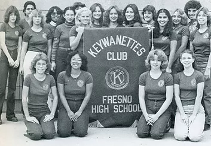

Between 1973 and 1974, past California-Nevada- Hawaii (CNH) Kiwanis District Governor Sid Smith wanted his daughters to have the option to join a service organization. Key Club was the only one existing at that time, but they weren't able to join because it was an all-male club. Smith wanted his girls to have the same opportunities as men so he started a club called Keyettes.
The name was changed to "Keywanettes" in the mid-70s because a women's organization on the east coast already had the rights to the name. It was through the efforts of the Cal-Nev-Ha district Kiwanis Sponsored Youth Advisors and high school principals that a program be made available to the young women of the community that provides the opportunities that young men had in Key Club.

In the beginning, Keywanettes was the fastest growing high school organization in the nation. There used to be four districts: Texas, West Virginia, the Carolinas, and CNH. However, the Texas, Virginia, and Carolinas District district merged with the Key Club District. Since CNH was so strong, and there was a need for both organizations, CNH remained the only District with both.

Keywanettes became KIWIN'S when the House of
Delegates convened at the 1995 CNH Convention.
KIWIN'S comes from the Otchipew language and
translates to "people, men and women, working
together in service." The Cal-Nev-Ha District
changed their name to dispel gender specific
connotations and promote growth.
And here we are today, in our 44th year of service, so let’s make it great.